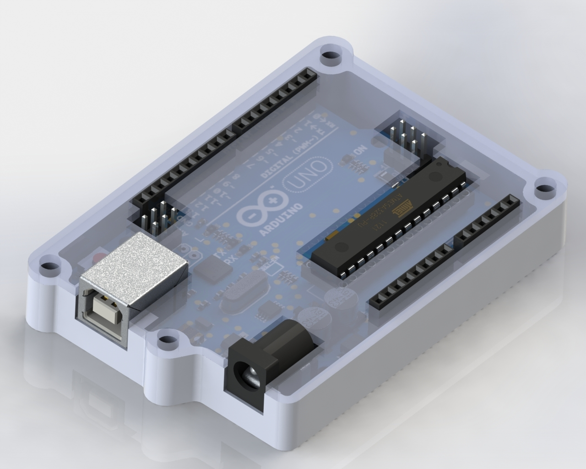

Arduify
Les détails de notre projet
On a commencé par prendre les dimensions de la carte Arduino ensuite on la modéliser sur SolidWorks puis nous avons programmer, nous avons ajouter l'option de changement de couleur en fonction de la température puis un bouton qui permet d'allumer l'écran LCD lorsqu'on appuie dessus, écologique pour l'environnement puisque l'on économise l'électrécité. Par la suite, nous avons grâce à l'imprimante 3D, imprimé le boîtier et nous avons rassembler le tout. Ce qui nous donne un thermométre.
- Participants:
- MEMMADI LOKMEN
- GUINEBAULT KYLANE
- KABIR ABDELLATIF